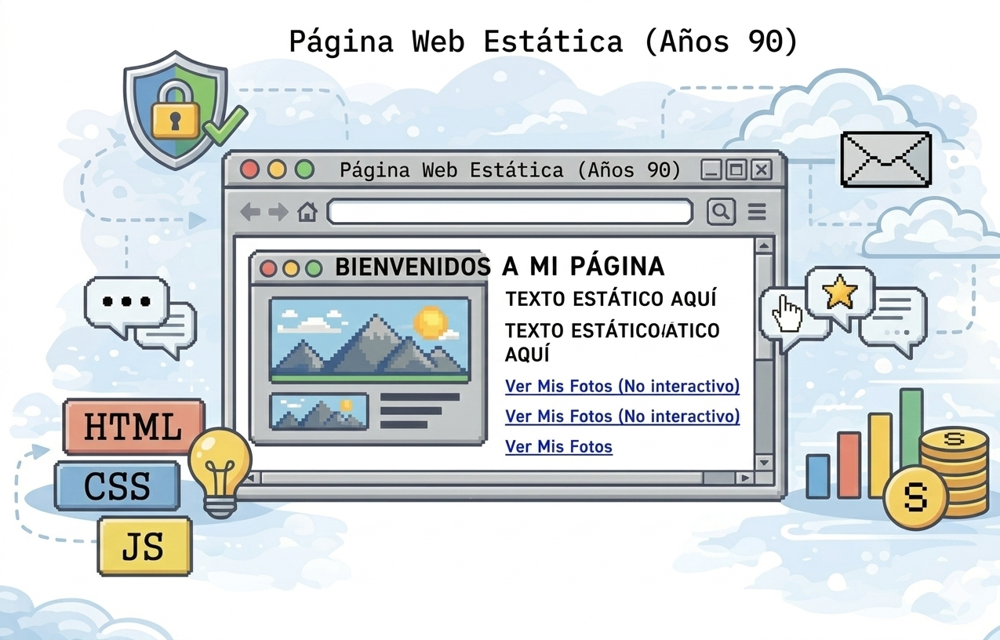
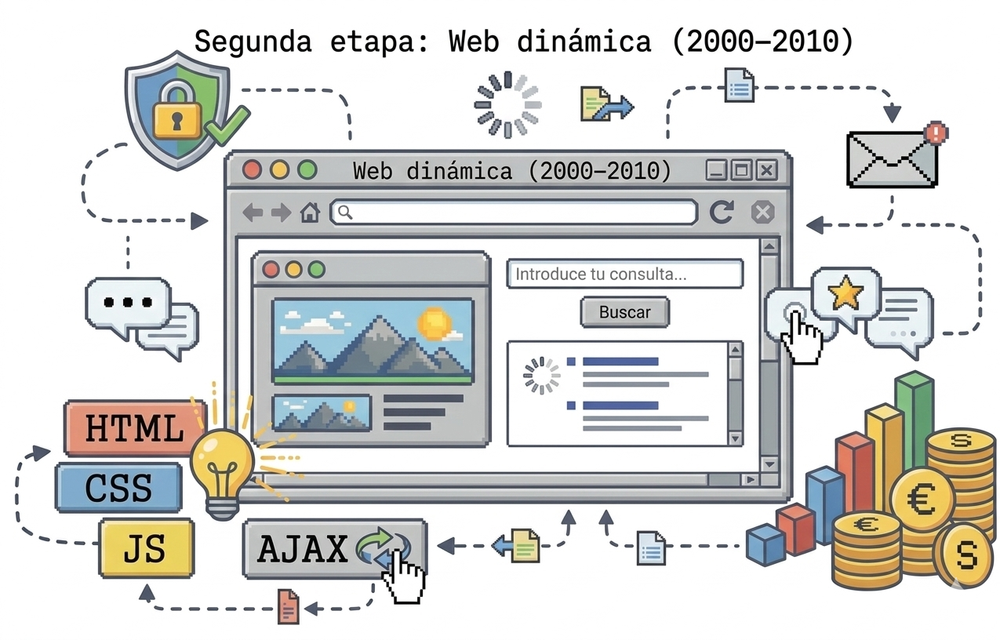
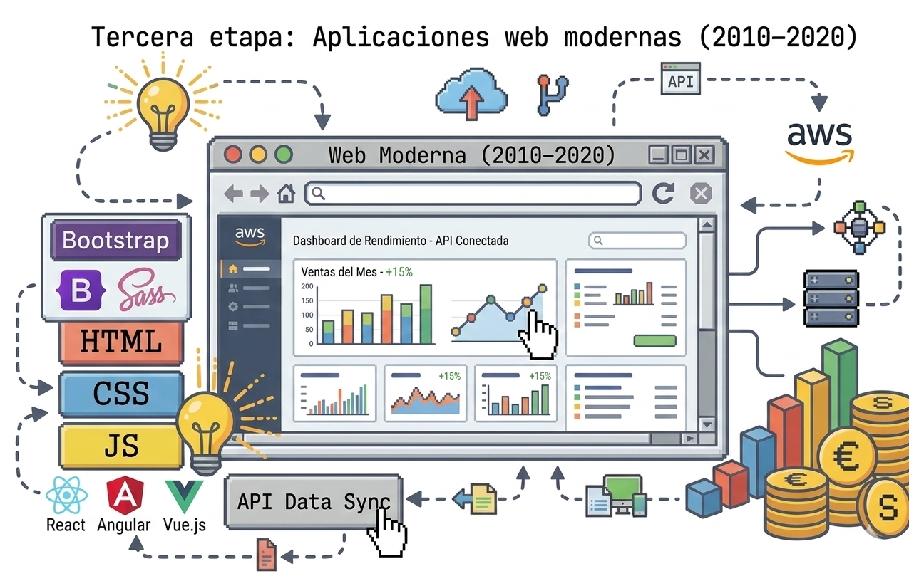
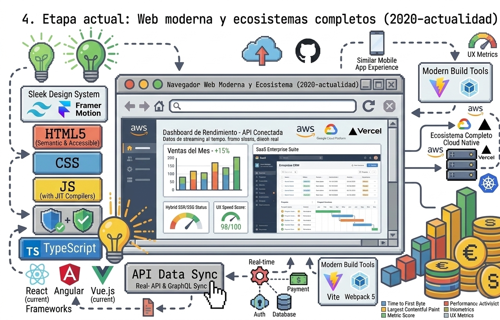

En los primeros sitios web, las páginas eran estáticas, es decir, el contenido casi no cambiaba.

En esta etapa las páginas empezaron a responder a las acciones del usuario sin tener que recargar todo el sitio.

Las páginas web se volvieron aplicaciones completas, similares a programas de escritorio.

Hoy el frontend es mucho más complejo y potente.

Karol Tatiana Ibarra Estudiante de quinto semestre de Desarrollo de Software.
kt.ibarra@unimayor.edu.co
316 919 5728
© 2026 Proyecto Académico – Arquitectura Web y Arquitectura Frontend. Diseño desarrollado con Bootstrap 5 y HTML basico.: